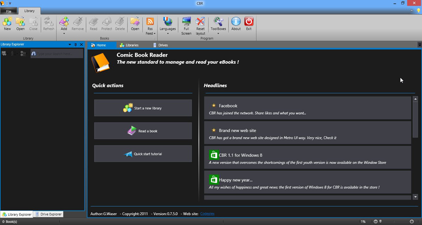
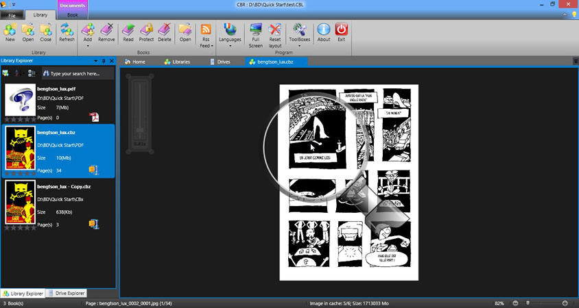
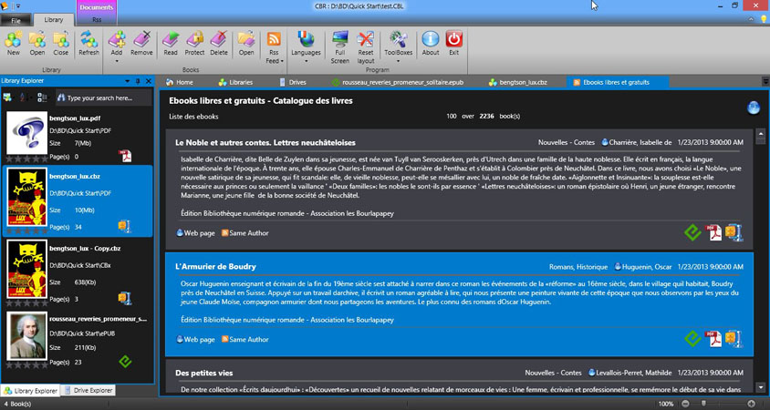
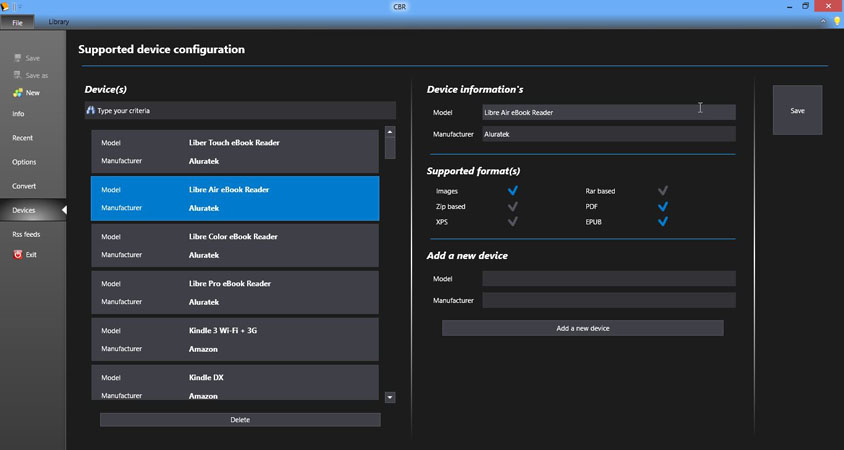
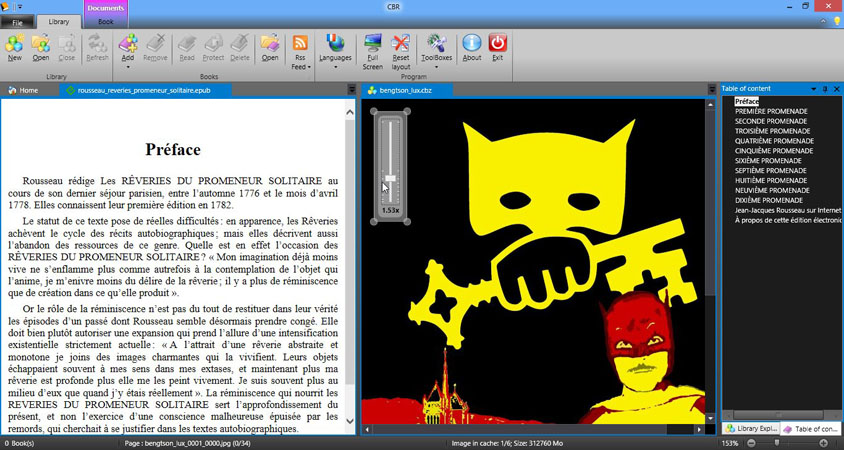
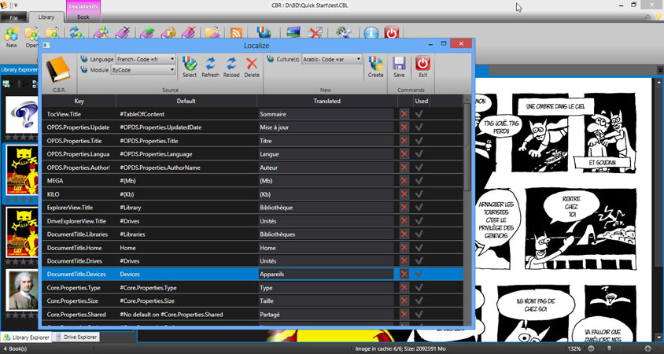

Original for desktop

CBR contains several convienent command to adujst it to you need
Full screen mode to maximize the reading surface and hide every unusefull elements, Toolboxes like the library explorer or the table of content, Well-known user interface elements like an Office like ribbon, Multi-documents support that you can customize to your needs, Home page with starting commands and CBR internal Rss feed to be informed about the last news, Recent file list to keep your favorite books or library on hand
Allow you to create and manage your libraries in a very simple manner. Fill from a folder, or add book one by one. Here under is the list : Create, open, close, delete, remove, refresh, Manage properties
Support plenty of commands Direct open, Remove (from library), Delete, Protect (with password, hide the cover, will be asked for each open), Mark as read, Bookmark, with Goto and Clear commands, Navigation with previous, first, next, last and goto commands, Adjust : Fit width, Fit Height, None, Two page display, Edit for comics only, to create a dynamic book with autoplay timing and zoom frames, Print (for XPS), Properties command that drives you to the backstage
Note : each type of document has got is own viewer and they do not support the same functionnalities

Support OPDS feeds(Open Publication Distribution System) that are dedicated to electronic publication. Manage your favorite feed in the backstage. Use the feed viewer to view, naviguate and download books

Supports devices and their capabilities. Manage your favorite device in the backstage : Name, manufacturer and the format supported by the device Use the device document displayed on any system event concerning external devices Manage the device contentcopy, delete, move.

Support multiple formats and can convert them from/to desired format. Images, CBR/RAR, CBZ/ZIP, EPUB, XPS Convert panel in the backstage provides a very powerfull functions : source, format, support folder and multiple files destination and format check, update options merge PDF images
Note : does not support multi-volume comics, means with sub-folder in it for each book. It is a design choice mainly for performance reasons.

Support multiple languages : French, English, German are provided by default. You can choose your default starting language, Create your own, Activate spell checking. QuickStart tutorial in French, English, German
Note : If you want help CBR to be delivered with a new language, please consult the support page for instructions